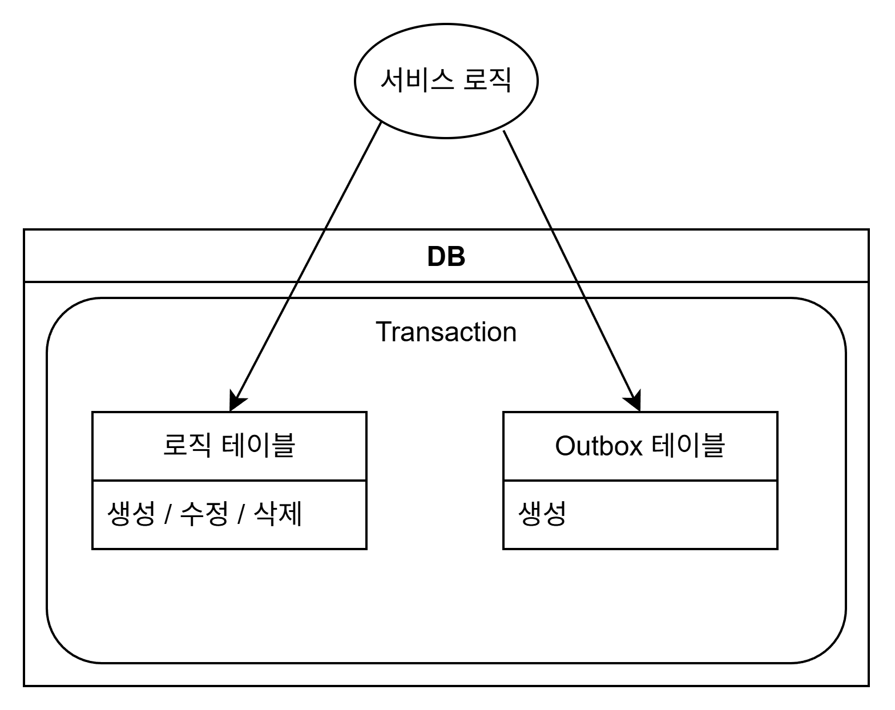
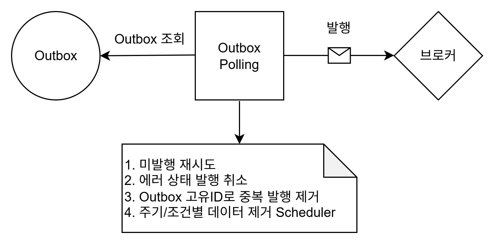
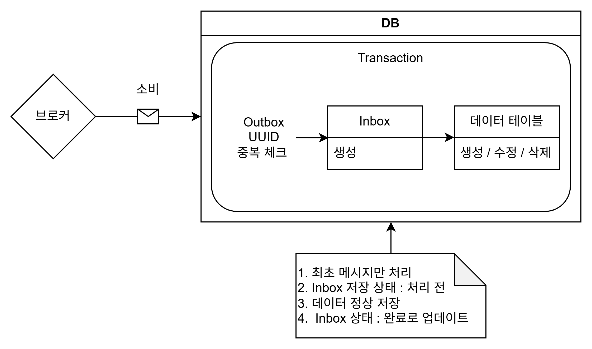

Career
김용준 1996. 04. 26
Java & Kotlin / Spring 기반 5년차 백엔드 개발자입니다.
연간 70만 건의 보험금 대신 청구를 처리하는 인슈어테크 플랫폼을 개발 및 운영했고, 모놀리식 서비스에 Strangler 패턴과 Kafka 기반 이벤트 드리븐 아키텍처를 도입했습니다.
현재는 Spring Boot 4 / Java 21 기반 백엔드를 초기 아키텍처부터 단독 설계하며, API 계약(OpenAPI)과 CI 게이트로 코드와 문서의 불일치를 머지 전에 차단하는 방식을 지향합니다.
핀게이트 | 플랫폼개발팀 2026. 04 – 재직중
보험 정보 아카이브 플랫폼 백엔드 구축 2026. 07 – 진행중
보험 정보(공지, 뉴스, 판례, Q&A, 통계, 보험사 디렉토리)를 웹과 앱으로 제공하고 관리자 백오피스로 운영하는 서비스입니다.
백엔드 전체를 빈 저장소에서 시작해 설계부터 구현 및 배포까지 단독으로 담당했습니다.
공개 API 7개 도메인 48 오퍼레이션(39경로)과 관리자 백오피스, DB 16개 테이블을 구축했고 FE와 BE의 계약 불일치를 CI가 잡아내는 OpenAPI 계약 파이프라인을 만들었습니다.
[Why?]
4모듈 멀티모듈 골격으로 시작한 이유
게이트웨이는 WebFlux, 공개 API는 MVC를 사용해 실행 모델이 달랐기 때문에 하나의 부트 모듈로 묶을 수 없었습니다.
반면 공용 오류 코드와 예외, 직렬화 규약은 양쪽에서 같이 사용해야 했습니다.
그래서 Gateway, Application, Admin, Common 4모듈로 나누고 공통 모듈은 compileOnly 격리 패턴으로 설계했습니다. 무거운 런타임 의존이 소비 모듈로 전이되지 않기 때문에 리액티브와 서블릿 양쪽이 같은 공통 모듈을 사용할 수 있습니다.
이후 관리자 서버를 별도 프로세스로 띄우던 구조는 단일 JVM으로 통합했습니다. 운영과 배포 단위가 하나로 줄었고 통합 부하에 맞춰 커넥션 풀을 재산정했습니다. 판단 근거는 결정 기록(ADR)으로 남겼습니다.
인가를 경로 기반에서 리소스 기반으로 바꾼 이유
기존에는 /api/public/** 형태의 경로 접두로 인가를 판정했습니다. 이 구조에서는 권한이 바뀌면 경로도 바꿔야 하고 신규 엔드포인트에서 인가 설정이 누락되면 그대로 열리는 문제가 있었습니다.
"URL은 식별자, 권한은 정책"이라는 원칙을 세우고 기본 개방 + @PreAuthorize 리소스 단위 역할 판정으로 재설계했습니다. 권한 변경이 경로 변경으로 번지지 않도록 하는 것이 목적이었습니다.
관리자 인증으로 JWT 대신 쿠키 세션을 선택한 이유
관리자 콘솔은 세션 강제 종료와 계정 잠금이 필요한 표면입니다. JWT는 발급 후 서버가 철회할 수 없어 블랙리스트 필터를 따로 유지해야 했습니다.
Redis 기반 쿠키 세션(HttpOnly, idle 12시간 연장)으로 전환하면서 블랙리스트 필터를 제거했고 5회 연속 실패 시 30분 계정 잠금을 함께 구현했습니다.
이후 단일 공유 계정을 tb_admin 다계정 구조로 이관해 계정별 권한과 감사 추적이 가능하도록 했습니다.
API 버전을 URL 메이저 단일 축으로 정한 이유
헤더나 쿼리로 버전을 협상하면 캐시와 로그에서 버전이 드러나지 않습니다. 경로에 버전이 있으면 로그만으로 어떤 계약으로 들어온 요청인지 확인할 수 있습니다.
다만 전체 API를 일괄 승격하면 소비자에게 전량 이전을 강요하게 되므로 파괴적 변경이 발생한 엔드포인트 단위로만 승격하도록 규약을 정했습니다.
폐기 절차는 스토어 배포 앱이 즉시 갱신되지 않는다는 전제에서 설계했습니다. Deprecation과 Sunset 헤더에 최소 3개월 유예를 두고, 유예 시작과 종료는 재배포 없이 게이트웨이 설정으로 제어되도록 구현했습니다.
[Trouble Shooting]
[문제 1. FE와 BE의 계약이 어긋나는 문제]
프론트엔드가 API 타입을 수기로 작성하고 있었습니다. 서버 DTO가 바뀌어도 프론트는 컴파일이 통과하고 런타임에 값이 비어서야 문제가 드러납니다.
API 문서도 별도로 관리되어 코드와 상시 어긋났습니다. 기획 문서와 백엔드 코드, 프론트 타입 세 곳이 각자 관리되면서 서로 어긋나는 상태였습니다.
[해결]
계약을 코드에서 생성하고 CI로 강제하는 파이프라인을 구성했습니다.
먼저 모듈별 런타임 스펙을 파일로 고정해 서버를 띄우지 않고도 API 전체를 읽을 수 있게 했고, 이를 단일 문서로 조립하는 CLI를 직접 만들었습니다. CLI에서는 다음 네 가지를 처리했습니다.
- 동일 이름에 정의가 다른 스키마 충돌을 검출 (덮어쓰면 한쪽 계약이 사라짐)
- 루트 security를 오퍼레이션 단위로 내려 병합 시 모듈 밖까지 인증 요구가 번지는 것을 차단
- 라우팅 프리픽스를 게이트웨이 설정에서 읽어 부여 (하드코딩하면 문서만 옛 주소를 가리킴)
- 라우트 파싱 실패를 예외로 승격 (조용히 건너뛰면 가드가 무력화됨)
그다음 코드만 고치고 커밋된 스펙을 두고 오면 머지를 차단하는 드리프트 게이트를 CI에 넣었고, 프론트는 openapi-typescript로 생성한 타입만 소비하도록 전환했습니다.
오류 응답도 스펙에 포함했습니다. 200만 적힌 문서로는 프론트가 실패 처리를 설계할 수 없기 때문입니다.
[문제 2. 기획 계약과 코드 계약의 좌표계가 다른 문제]
백엔드 경로는 /application/api/v1/announcements, 기획 문서 경로는 /announcements였습니다. 좌표계가 달라서 각자 자기 문서와는 일치하지만 실제로는 어긋나는 상태가 검사에 걸리지 않았습니다.
프론트가 기획 경로를 보고 만든 URL이 백엔드에 닿지 않아도 통과하는 구조였습니다.
[해결]
경로 문자열은 리팩토링할 때마다 바뀌기 때문에 앵커로 쓸 수 없다고 판단했습니다. 대신 operationId를 앵커로 삼아 양쪽 계약을 CI에서 전수 대조했습니다.
대조 결과 기획 발행 없이 개발이 먼저 신설한 엔드포인트가 나왔습니다. 이를 오류로 처리하면 정당한 작업이 막히므로 DEV_OWNED 목록에 사유와 함께 올려 차단하지 않고 가시화했습니다.
[문제 3. 인가 어노테이션 누락이 그대로 개방으로 이어지는 문제]
리소스 기반 인가로 바꾸면 판정은 명확해지지만, 개발자가 @PreAuthorize를 빠뜨린 관리자 컨트롤러는 기본 개방 정책 때문에 그대로 열립니다. 코드 리뷰에서 놓치면 배포까지 이어집니다.
[해결]
"관리자 컨트롤러에는 클래스 레벨 @PreAuthorize가 있어야 한다"를 ArchUnit 규칙으로 작성해 빌드에서 강제했습니다. 어노테이션이 누락되면 테스트 단계에서 실패합니다.
게이트웨이에서는 클라이언트가 보낸 X-User-* 신원 헤더를 항상 제거한 뒤 재부여하도록 해서 헤더 위조로 다른 사용자가 되는 경로를 차단했습니다.
인가 스모크 테스트 5건(개방, 401, ADMIN 200, USER 403, 미정의 역할 강등)으로 회귀를 방지했습니다.
[문제 4. CI가 코드가 아닌 환경 때문에 실패하는 문제]
매퍼 테스트가 로컬에 띄워 둔 PostgreSQL에 의존하고 있어 CI 러너에서는 동작하지 않았습니다. 실패 원인도 매번 달라 재시도로 넘기기 쉬운 상태였습니다.
[해결]
매퍼 테스트가 Testcontainers로 자기 PostgreSQL을 기동하도록 전환하고 CI 차단 게이트로 승격했습니다. 이후 발생한 장애는 재시도나 관용 설정으로 덮지 않고 원인을 규명해 제거했습니다.
- 러너 홈의 0바이트 도커 config를 Testcontainers가 읽고 죽던 문제를 해당 설정을 읽지 않도록 격리
- 컨테이너 정리가 익명 볼륨을 남기던 문제를 컨테이너 이름 고정과 종료 시 볼륨 회수로 해결
- 체크아웃 중 취소되면 잘린
.git/index가 남아 이후 잡이 전부 실패하던 문제를 체크아웃 전략 고정으로 차단 - 프론트 잡이 남긴 자손 프로세스를
after_script에서 회수해 다음 잡이 멈추는 현상 제거 - 동일 캐시 키 동시 업로드 경합 해소, 스크립트 타임아웃을 잡 타임아웃 아래로 재배치
[Result]
- API 계약이 39경로 48 오퍼레이션 규모로 커진 뒤에도 코드와 문서의 불일치가 머지 전에 차단되는 구조 확보
- 프론트엔드가 별도 협의 없이 생성 타입만으로 API를 소비, 계약 관련 커뮤니케이션 비용 제거
- GitLab CI 5스테이지 20+ 잡 운영, Testcontainers 기반 DB 매퍼 테스트를 CI 차단 게이트로 승격
- 시크릿을 AWS Parameter Store로 이관하고 미주입 시 기동 실패로 전환해 커밋된 기본값 제거
- 아키텍처와 버저닝, 레이트리밋 등 되돌리기 어려운 판단을 결정 기록(ADR) 5건으로 문서화
보험설계 플랫폼(봄봄) 백엔드 개선 및 인프라 통합 2026. 04 – 2026. 07
보험 설계사가 고객의 보유 계약을 수집하고 분석해 상품을 비교 및 설계하는 B2B2C 플랫폼입니다.
개인정보를 다루는 금융 도메인이며 5개 백엔드 모듈과 프론트엔드의 유지보수 및 개선, 분산된 저장소와 CI의 통합을 담당했습니다.
[Trouble Shooting]
[문제 1. 설계 저장 시 상품이 유실되는 장애]
보장추천에서 상품설계, 설계완료에서 진단결과로 이어지는 저장 과정에서 일부 상품이 저장되지 않는 현상이 간헐적으로 보고되었습니다. 오류도 나지 않고 로그도 남지 않아 재현이 어려웠습니다.
원인은 세 가지가 겹친 구조였습니다. 저장 루프의 불완전 행 가드가 continue가 아닌 break로 작성되어 불완전한 행 하나 뒤의 모든 상품이 저장되지 않았고, 전체 삭제가 선행되는 데다 @Transactional이 없어 부분 실패가 영구 데이터 손실로 확정되었습니다.
[해결]
@Transactional(rollbackFor = Exception.class)로 삭제와 재삽입을 원자화했습니다. 해당 메서드가 checked 예외를 던지기 때문에 rollbackFor를 명시해야 롤백이 보장됩니다.
break와 continue 이중 가드를 단일 continue 가드로 통합하고 판정 기준을 키 부재, 값 null, 필수 필드 null로 명시했습니다. 기존에 parseLong(null)=0으로 저장되던 행도 함께 차단됩니다.
스킵된 행은 식별자 수준만 로깅하도록 했습니다. 개인정보 평문을 남기지 않는 정책입니다.
프론트가 비동기 로딩이 끝나기 전 불완전 행을 전송하는 근본 원인에 대해서는 별건으로 대책을 제안했습니다.
[문제 2. 보험사 비교 보험료 계산의 N+1]
보험사 비교 화면은 담보와 특약 단위로 보험료를 병렬 계산합니다. 이때 동일한 상품과 특약 메타데이터를 매 호출마다 다시 조회하고 있어 중복 DB 조회가 대량으로 발생했습니다.
[해결]
요청 로컬 메타 캐시를 도입해 메타 조회를 요청당 1회로 축소했습니다. 이후 동시성 처리를 두고 두 방식을 비교했습니다.
computeIfAbsent: 중복 로드는 없지만 매핑 함수를 bin 락을 보유한 채 실행하므로 블로킹 JDBC를 락 안에서 수행하게 됩니다get + putIfAbsent: 락을 점유하지 않는 대신 첫 배치에서 소량 중복 로드를 허용합니다
요청 범위에서 살고 곧 버려지는 캐시라면 소량 중복 로드가 락 점유보다 저렴하다고 판단해 후자를 채택하고 근거를 코드 주석과 보고서에 남겼습니다.
캐시 키는 문자열 결합에서 record 값 객체로 교체해 구분자 충돌 가능성을 제거했습니다. 코드리뷰에서 지적된 공유 캐시의 가변 노출은 저장 시점에 불변 뷰로 감싸 타입 수준에서 변이를 차단했습니다.
추가로 확인한 병목(CompletableFuture.supplyAsync의 executor 미지정으로 블로킹 JDBC가 JVM 전역 공용 풀을 잠식하는 문제)은 이번 범위 밖으로 보류하고, 전용 풀 크기를 커넥션 풀과 맞출 것까지 포함해 학습 로그로 이관했습니다.
[문제 3. 레거시 축약어 명명이 전 계층에 관통한 문제]
clphn_no, cnsl, insrr 같은 축약어가 DDL과 Mapper, DTO, URL, Redis 키, 프론트까지 전부에 퍼져 있었습니다. 신규 인원 온보딩 비용이 크고 오독 리스크가 높았습니다.
코드만 바꾸면 컴파일과 테스트는 통과하지만 런타임에 틀리는 지점이 섞여 있는 것이 문제였습니다.
[해결]
레이어와 도메인별 수직 차수로 나눠 전환했습니다(ip, admin, pm, common 순). 각 차수마다 설계, 구현, 리뷰, 빌드 검증, 보고서를 강제했습니다.
코드만 바꿔서는 안 되는 외부 계약 4종을 먼저 식별했습니다.
- 프론트 payload 키 : 키가 어긋나면 보험료가 0으로 저장됩니다. JSONB 키 rename 마이그레이션(forward/rollback) 동반
- 운영 DB에 저장된 데이터 값 : 보험사 코드 매핑이 실패합니다. UPDATE 스크립트 동반
- 컨트롤러
@*MappingURL 문자열 : 자동 변환 도구가 건드리지 않는 수동 대상입니다. 프론트 호출이 404가 되므로 FE 동시 변경 - 파일 스토리지 경로 : 기존과 신규 파일 경로가 혼재하게 되어 리스크 대비 이득이 낮다고 판단, 의도적으로 변경하지 않음
URL은 API 정본 문서와 대조하는 전수 감사 스크립트를 만들어 MISMATCH를 0으로 수렴시키고, 감사 절차를 마이그레이션 런북에 정식화했습니다.
개인정보 무손실은 정량 게이트로 운영했습니다. 변경 전후 어노테이션 개수를 대조하고(@Encrypt 35=35 등) HMAC 컬럼 페어가 동일 INSERT에 유지되는지, WHERE 절에 평문이 쓰이지 않는지를 매 차수 확인했습니다.
이 과정에서 프론트는 이미 새 키로 보내는데 백엔드만 구 키로 읽고 있던 잠재 버그를 발견해 해소했습니다.
[문제 4. 저장소와 CI가 분산되어 있던 문제]
백엔드가 7개 저장소로 흩어져 있고 프론트와 문서, DB 스키마가 별도로 있었습니다. 서브모듈 URL이 사설 IP 기반이라 CI 인증이 불안정했고 저장소마다 개별 CI 설정이 파편화되어 있었습니다.
[해결]
전체 자산을 3루트 단일 모노레포(backend, frontend, knowledge)로 통합하고 모듈별 개별 CI 5식을 루트 단일 파이프라인으로 일원화했습니다. 경로 룰 기반 선택 빌드로 관련 없는 모듈의 빌드를 제거하고 러너 태그를 6종에서 2종으로 줄였습니다.
브랜치 푸시만으로 MR이 자동 생성되고 AI 코드리뷰와 보안 리뷰가 코멘트로 게시되는 파이프라인을 구축했습니다. 이때 리뷰 스크립트는 MR 브랜치가 아닌 정본 브랜치에서 가져오도록 했습니다. MR 브랜치 버전을 그대로 실행하면 악의적인 MR이 리뷰 스크립트를 조작해 CI 토큰을 탈취할 수 있기 때문입니다.
통합 과정에서 manual 잡과 optional needs가 충돌해 deploy가 skip되던 문제를 실측으로 규명하고, 원인과 재발 방지 근거를 설정 파일 주석에 남겼습니다.
[Result]
- 간헐적으로만 보고되던 데이터 유실 장애의 근본 원인 규명 및 수정, 재발 패턴 문서화
- 보험료 계산의 중복 DB 조회 제거로 비교 화면 부하 감소, 캐시 계층 동시성 전략 일관화
- 마이그레이션 전 차수에서 5개 모듈 빌드 성공, 도메인 경계 위반 0건, 개인정보 어노테이션 손실 0건 유지
- 모듈별 CI 5식을 루트 1식으로, 러너 6종을 2종으로 축소
- 리뷰 없이 머지되는 변경이 사라졌고, AI 리뷰가 병합 전 CRITICAL 결함(공유 캐시 가변 노출)을 실제로 차단
사내 AI 개발 플랫폼 플러그인 개발 2026. 06 – 진행중
전사 개발 조직이 공유하는 AI 협업 도구 마켓플레이스에 플러그인을 개발했습니다.
프로젝트마다 반복하던 초기 세팅과 문서 및 코드 정합 검증을 도구로 규격화하는 것이 목표였습니다.
[Solution]
- 백엔드 스캐폴드 플러그인 신설 : 게이트웨이와 멀티모듈 Spring Boot 골격을 대화형 질문 9개로 생성
- 프론트 스캐폴드 플러그인 신설 : pnpm workspace 모노레포 골격과 디자인 토큰 소비 방식 2종
- 기획 정본과 개발 문서의 정합 검증 엔진 개발 : 검사 10종, 회귀 테스트 97건
[Why?]
최신 버전이 아니라 Spring Boot 4.1을 권장 기준선으로 둔 이유
스캐폴드의 기본값은 이후 생성되는 모든 프로젝트가 물려받기 때문에, 기준을 최신이 아니라 OSS 지원이 유지되는 안정 라인으로 정했습니다.
Boot 4.0은 OSS 지원이 6개월 뒤 종료되어 신규 프로젝트가 곧 재갱신을 맞게 됩니다. 4.1은 지원 기간이 길고 기반 프레임워크가 숙성된 minor라 major 초기 리스크가 없다고 판단했습니다.
레거시 정합이 필요한 경우를 위해 보수 기준선(Boot 3.5)을 함께 유지하되, 템플릿에는 버전을 하드코딩하지 않고 토큰으로만 참조하게 했습니다. 버전 갱신 시 표 하나만 고치면 전체 템플릿에 반영됩니다.
Boot 3에서 4로 넘어가는 차이(웹 스타터 아티팩트 개편, Jackson 3 전환, 예외 핸들러 패키지 이동)도 템플릿 토큰으로 흡수했고, 공통 모듈의 의존을 끊어 Jackson 2와 3이 동시에 배선되는 상황을 차단했습니다.
[Trouble Shooting]
[문제 1. 스캐폴드 템플릿의 신원 스푸핑 취약점]
템플릿의 게이트웨이 인증 필터가 다운스트림에 X-User-Id 헤더를 전달하면서 클라이언트가 직접 보낸 같은 헤더를 제거하지 않고 있었습니다.
다운스트림 서비스는 이 값을 게이트웨이가 부여한 값으로 신뢰합니다. 게이트웨이가 정화하지 않으면 외부에서 헤더만 위조해 다른 사용자로 인증을 우회할 수 있습니다.
신뢰 경계를 따라 점검하다 발견했습니다. 스캐폴드 원본의 결함이라 이후 이 템플릿으로 생성되는 모든 프로젝트에 복제될 문제였습니다.
[해결]
인증 경로와 인증 제외 경로 양쪽에서 클라이언트 발신 헤더를 제거한 뒤 전달하도록 수정했습니다. 제외 경로를 빠뜨리면 그쪽이 우회로가 됩니다.
점검 과정에서 제외 경로 prefix 매칭이 /auth 규칙으로 /authx/**까지 통과시키는 결함도 확인해 세그먼트 경계 기준 매칭으로 교정했습니다.
수정 후 권장 기준선으로 재렌더링해 게이트웨이 테스트 통과를 확인했고, 신뢰 경계와 헤더 정화 관점을 스캐폴드 보안 리뷰 규약으로 정착시켰습니다.
[문제 2. 검사를 수행하지 않았는데 통과로 보고되는 문제]
이 트랙은 기획 정본을 복제하지 않고 절 번호로 가리키는 방식이라, 좌표가 틀어지면 형식 검사는 전부 통과하면서 내용만 어긋납니다. 인용한 절이 정본에 실재하는지, ID 집합에 차집합이 없는지를 검사하는 두 항목이 이를 잡아내는 지점이었습니다.
그런데 초기 구현은 산출물 좌표를 찾지 못해 검사를 건너뛴 경우에도 정상 종료했습니다. 호출자 입장에서는 10종 전부 통과와 구분되지 않아, 인자 없이 잘못 부른 실행 하나가 게이트 전체를 무력화합니다.
기존 drift 검사도 같은 문제였습니다. 낡은 산출물을 찾아 출력하면서 정상 종료했기 때문에 CI에 걸어도 실제로는 아무것도 막지 못했습니다.
[해결]
수행하지 않은 검사와 통과한 검사를 같은 값으로 보고하지 않도록 엔진에 원칙을 내장했습니다. 좌표를 찾지 못해 건너뛴 경우는 실패로 처리하고 비정상 종료합니다.
drift 검사에는 --strict를 도입해 CI에서만 차단하도록 했습니다. 차단 대상은 판정이 확정된 3축(낡음, 누락, 판정불가)으로 한정하고 사람이 결정해야 할 항목은 종료 코드로 올리지 않았습니다. 정당한 작업까지 막히면 게이트를 우회하게 되기 때문입니다.
기본 모드는 경고를 유지해 도입 시점의 마찰을 줄였습니다.
흩어져 있던 절과 ID 정규식은 공용 마크다운 파서로 통일했습니다. 검증 엔진은 오류가 있어도 겉으로 드러나지 않기 때문에 작성한 엔진 전부에 회귀 테스트를 붙였습니다.
[Result]
- 신규 백엔드 프로젝트 초기 세팅을 대화 9문항과 렌더 1회로 축소, 버전과 응답 규약, 시큐리티 기본값이 조직 표준으로 수렴
- 템플릿 보안 결함을 파생 프로젝트로 확산되기 전에 원본에서 차단
- 검증 엔진 회귀 테스트 97건 확보, 보고만 하던 검사를 차단 게이트로 승격
- 실서비스에서 완주한 구조만 스캐폴드 기본값으로 승격하는 규율 확립
마이크로프로텍트 | IT본부 2024. 08 – 2025. 10
발급매니저 앱(잇슈) 2025. 06 – 2025. 10
대리인이 위임장을 발급받아 병원 서류를 대신 발급받고 앱을 통해 서류를 업로드하여 청구를 진행할 수 있는 기능을 설계하고 구현했습니다.
기존에는 모놀리식 구조로 운영되었기 때문에 전체 서비스로 장애가 확산되는 문제가 있었습니다.
문제를 해결하기 위해 Strangler 패턴을 사용했고 kafka를 사용해 이벤트 드리븐 아키텍처를 도입했습니다.
이를 통해 일부 서비스의 장애나 배포가 다른 서비스에 영향을 주지 않도록 격리했으며 부하가 집중되는 도메인이 독립적으로 확장할 수 있는 구조를 확보했습니다.
[Why?]
Strangler 패턴을 사용한 이유
- 가장 큰 이유로 장애가 발생하는 경우 전체 시스템으로 전파되어 운영 안전성 저하
- 일부 기능만 수정했음에도 전체 시스템을 배포해야 하기 때문에 배포 리스크 존재
- 장애 발생 시 장애 해결 시간과 전체 배포 시간을 기다려야 하기 때문에 해당 시간 동안 사용자가 이탈할 수 있는 리스크 존재
이벤트 드리븐 아키텍처를 사용한 이유
동기 중심으로 호출을 하게 되면 서비스간 결합이 강해져 확장이 제한되고 장애 격리가 어렵습니다.
또한 동기 중심의 통신 방식은 정해진 규약과 틀을 맞춰야 하기 때문에 서비스 간 유연한 통합이 어렵습니다.
반면 이벤트 드리븐 아키텍처는 발행자와 소비자의 결합을 느슨하게 유지할 수 있으며 이벤트 기반으로 작업이 수행되므로 서비스 간 상호 동작 방식에 영향을 주지 않고 사용할 수 있다고 생각했습니다.
Kafka를 선택한 이유
사실 바로 Kafka를 사용하려고 했던 것은 아니었습니다.
Message Broker를 찾아본 결과 여러 제품들이 있었고 그 중 가장 많이 사용하면서 정보가 많은 RabbitMQ와 Kafka 중 무엇을 쓸지 고민했습니다.
Kafka는 이벤트를 일정 기간 동안 저장하고 과거 데이터를 재처리할 수 있지만 RabbitMQ는 메시지가 소비되면 바로 제거되기 때문에 데이터 유지나 장애 상황에서의 재처리가 어렵다고 판단했습니다. 특히 배당 단위로 발생하는 대량의 이벤트를 처리하기 위해서는 파티션 키를 활용한 순서 보장과 batch 기능을 지원하는 Kafka가 더 적합하다고 보았습니다. 물론 RabbitMQ도 큐 방식이기 때문에 순서 보장이 가능하고 Inbox 패턴을 통해 중복 제거와 재처리를 구현할 수는 있습니다.
그러나 앞으로 MSA로 확장될 수 있는 가능성이 있기에 하나의 프로듀서가 발행한 이벤트를 여러 서비스가 독립적으로 소비해야 했고 확장성과 유연성 측면에서 Kafka가 더 효율적인 선택이라고 판단했습니다.
[Trouble shooting]
[문제 1. 이벤트 발행의 원자성이 보장되지 않는 문제]
Kafka는 DB 트랜잭션과 별개로 독립적인 트랜잭션을 가지고 있습니다. 그렇기 때문에 하나의 트랜잭션으로 묶어 처리가 불가능했습니다.
예를 들어 DB 커밋은 성공했지만 네트워크 장애로 Kafka 전송이 실패하면 DB에는 데이터가 있지만 다른 서비스는 이벤트를 받지 못하는 데이터 불일치가 발생합니다.
해당 문제를 해결하기 위해 Outbox 패턴을 도입하였습니다.
[해결]

Outbox 패턴을 사용하여 서비스 로직과 이벤트 발행을 하나의 DB 트랜잭션으로 원자성을 보장하여 처리할 수 있도록 작업했습니다.
Outbox 테이블에 이벤트의 데이터를 저장하고 이벤트를 보낼 때 Outbox를 조회하여 처리할 수 있도록 해결했습니다.
[문제 2. 이벤트 발행 방식 선택]
발행 방식은 크게 2가지(폴링 / CDC [Debezium])를 생각했습니다.
CDC의 경우 테이블에 변경이 발생하는 경우 WAL을 읽어 이벤트를 실시간으로 발행할 수 있다는 장점이 있습니다.
하지만 DB설정이 필요하다는 리스크도 존재합니다. 계정에 리플리케이션 권한을 부여해야 하고 WAL의 레벨을 logical로 변경해야 논리적으로 어떤 테이블이 변경되었는지 구분할 수 있습니다. 또한 리플리케이션 슬롯을 생성하고 Debezium같은 커넥터를 DB에 연결하고 WAL을 읽어야 하므로 DB의 관리 포인트가 많아지게 됩니다.
Kafka와 연결이 끊겨 WAL을 소비할 수 없는 상태가 되는 경우 WAL이 쌓이게 되고 이로 인해 디스크 풀이 발생할 수 있습니다.
[해결]

폴링 방식을 선택했습니다.
크게 두가지 이유가 있었는데 첫 번째로 애플리케이션 레벨에서 모든 로직을 제어할 수 있기 때문입니다.
장애가 생기거나 이벤트 발행에 수정이 필요한 경우 코드를 수정하여 해결이 가능하고 장애를 로그로 확인할 수 있기 때문에 관리가 용이하다고 생각했습니다.
두 번째로 단순하지만 신뢰할 수 있는 방식이며 리스크가 거의 없기 때문입니다.
디스크 풀 리스크가 있음에도 CDC를 사용하는 이유는 실시간 발행 처럼 사용할 수 있고 처리 속도가 빠르기 때문입니다.
하지만 환급 서비스는 실시간성과 속도보다 안정성이 더 중요하기 때문에 치명적인 장애 리스크가 없고 로그를 바로 확인할 수 있는 폴링을 선택하여 해결하였습니다.
[문제 3. 분산 환경에서 중복 및 순서 보장 발행 문제]
폴링을 분산 환경에서 사용하는 경우 이벤트가 중복으로 발행될 수 있는 문제가 있었습니다.
예를 들어 3개의 인스턴스가 이벤트를 폴링으로 발행할 때 동시에 접근하게 된다면 같은 이벤트가 중복으로 발행되게 됩니다.
또한 파티션 키가 있는 이벤트는 해당 키를 기준으로 순서를 보장해서 발행해야 하는데 인스턴스가 각자 발행해 버리면 순서가 보장되지 않는 문제가 발생합니다.
[해결]
FOR UPDATE와 SKIP LOCKED을 사용해서 해결하였습니다.
FOR UPDATE를 통해 중복 처리를 방지할 수 있고 SKIP LOCKED을 통해 병렬 처리하여 성능 또한 챙길 수 있었습니다.
외부 의존성 없이 단순하게 처리가 가능하며 인스턴스의 개수가 많아 지면 병렬 처리의 효율도 증가하기 때문에 가장 적합하다고 생각했습니다.
또한 SKIP LOCKED을 사용하면 순서 보장을 할 수 없는데 이를 해결하기 위해 파티션 키가 존재하는 이벤트는 상태를 기준으로 조회하지 않고 파티션 키를 기준으로 조회하여 하나의 인스턴스가 동일한 파티션 키를 순차적으로 발행하게 하여 순서를 보장하도록 해결하였습니다.
[문제 4. 단건 이벤트 발행으로 인한 성능 문제]
처음 설계 당시에는 배당을 구성하는 요소를 전부 분리하여 개별 이벤트로 발행하는 방식으로 작업했습니다.
이로 인해 파티션 키 하나당 최대 약 3,600개의 이벤트가 발행되었고 발행 시간은 약 12,000ms가 소요되었습니다.
결과적으로 개별 이벤트를 순차적으로 발행하는 방식으로 인해 네트워크 왕복 시간이 누적되면서 성능 병목이 발생했습니다.
[해결]
PostgreSQL에 Jsonb컬럼과 batch를 사용하여 문제를 해결하였습니다.
최대 500개를 기준으로 이벤트의 데이터를 묶어서 batch처리하고 Jsonb컬럼에 최대 128KB로 저장하여 이벤트를 7~9개 사이로 처리하였습니다.
또한 Kafka 이벤트 하나의 권장 최대치는 1MB로 500개 묶음의 이벤트를 lz4를 사용하여 압축하고 약 50~70KB수준으로 처리하였습니다.
그 결과 배당 한 건의 처리 시간이 약 800ms로 93%의 성능을 개선할 수 있었습니다.
[Jsonb의 이벤트 처리 문제]
Jsonb의 경우 2KB가 넘어가면 TOAST 압축이 발생하게 됩니다. 128KB기준 30~45KB로 압축되어 디스크에 저장됩니다.
하지만 문제는 압축된 데이터를 조회하는 경우 작은 청크로 분리된 데이터를 다시 조회하기 때문에 I/O비용이 발생하고 압축 해제시 CPU를 사용하여 메모리까지 올리는 과정이 성능에 영향을 줄 수 있었습니다. 컨슈머의 Inbox 데이터가 적은 경우는 성능 저하를 느끼기 힘들지만 데이터가 많아질수록 체감할 수 있게 됩니다.
이러한 장기적인 문제를 고려하여 S3 저장 방식으로의 전환을 검토하였습니다.
- Outbox를 사용하고 있기 때문에 원자성을 보장하는데 문제가 없습니다.
- 데이터가 많아 지더라도 용량 부담이 줄어 들고 DB의 부하를 줄일 수 있습니다.
- Jsonb를 사용할 수 없는 DB를 사용하더라도 호환이 가능하기 때문에 S3방식 또한 고려해 보았습니다.
[문제 5. 이벤트 소비 문제]
컨슈머가 이벤트를 소비하는 경우 크게 두 가지 문제가 있었습니다.
- 이벤트 처리 실패 시 몇 번 재시도했는지 왜 실패했는지 추적하고 재처리하기 어려운 문제가 있었습니다.
- 네트워크 장애나 프로듀서의 재시도로 인해 동일한 이벤트가 중복 발행될 경우 컨슈머도 중복 처리되는 문제가 있었습니다.
[해결]

Inbox 패턴을 도입하여 두 가지 문제를 해결했습니다.
- Inbox를 사용하지 않아도 재처리는 구현할 수 있습니다. 하지만 몇번에 재처리가 발생했고 어떤 이벤트가 실패했는지는 알 수가 없습니다.
재처리 횟수를 Inbox에 저장하고 재처리 횟수가 최대치를 넘을 경우 실패 상태로 Inbox에 저장하여 추적할 수 있도록 설계하였습니다. - 중복 발행된 이벤트의 경우는 Outbox의 고유 키를 사용하여 처리하였습니다. 이벤트 헤더에 Outbox의 고유 키를 같이 넣고 Inbox에 저장할 때 같이 저장되게 됩니다. 그 후, 같은 고유 키의 이벤트가 소비되려고 한다면 저장된 고유 키를 확인해서 존재하는 경우 소비하지 않는 방식으로 처리했습니다.
보험 상담 보장 분석 2025. 04 – 2025. 05
보험 상담을 진행하기 위해서는 상담원이 상담 고객의 보장 분석 웹에 접속하여 파편화된 데이터를 직접 찾아서 봐야 하는 문제를 해결하기 위한 프로젝트였습니다. 기획자와 같이 논의하여 어떤 식으로 개선할 수 있을지 의견을 나누었고 해결 방안으로 스크래핑을 이용해서 데이터를 수집하고 백오피스에서 바로 확인할 수 있게 방향을 잡아 개발하였습니다.
[Solution]
- Firefox-Selenium 기반 스크래핑 서버를 구축하고, Kotlin + Selenium(headless 모드)으로 구현하여 데이터 자동 수집
- 수집된 데이터를 DB에 저장하여 상담원이 웹에 직접 접속하지 않고도 필요한 정보를 조회 가능하도록 기능 개발
[Why?]
스크래핑이 꼭 필요했던 이유
고객별로 보험 정보를 저장할 수 있어야 했습니다.
해당 보장 분석 웹은 API를 따로 제공하지 않았고 네트워크 분석 또한 불가능한 상황이었기 때문에 제공받은 데이터를 저장하기 위해서 Selenium을 사용해 스크래핑을 진행하였습니다.
Firefox-Selenium을 사용한 이유
ChromeDriver는 버전 호환성 문제가 자주 발생했습니다. Chrome 버전과 Driver 버전이 mismatch되는 경우가 생길 수 있었고 자동 업데이트가 빈번했습니다.
Firefox 또한 GeckoDriver와 버전을 맞춰 주어야 하지만 자동 업데이트가 빈번하지 않으며 GeckoDriver 최신 버전이 과거 Firefox 버전과 호환되는 경우도 있어 운영환경에 더욱 적합하다고 생각했습니다.
[Trouble shooting]
[문제 1. 스크래핑 시 Out Of Memory 발생]
스크래핑 서버를 구축하는 과정에서 가장 큰 제약은 비용 효율성과 안정성이었습니다.
Selenium 기반 스크래핑은 페이지 로딩 시점에서 메모리 사용량이 순간적으로 증가하여 서버가 Out Of Memory로 중단되는 문제가 발생했습니다.
[해결]
서버 사양을 업그레이드하면 쉽게 해결이 가능하지만 비용이 2배 증가하는 단점이 있었습니다.
SWAP의 경우 메모리 스파이크시점에만 보조적으로 동작하기에 성능 저하를 크게 느끼기 힘들고 단점보다 장점의 이득이 더 높다고 판단하여 사용하였습니다.
서버 사양 t4g.small 환경을 유지하면서 가상 메모리 스왑(SWAP) 2GiB를 적용하여 메모리 부족 문제를 해결했습니다.
보험금 Q&A (짤랑) 2025. 02 – 2025. 03
보험금 관련 단순 문의가 상담원에게 전화로 빈번히 접수되어 업무가 가중되는 문제가 있었습니다. 이를 해결하기 위해 자주 묻는 질문과 답변을 앱에서 바로 확인할 수 있는 기능을 구현하였습니다. 또한, 사용자가 언제든 질문을 작성하고 다른 사용자의 질문과 답변을 확인할 수 있도록 하여 반복적인 전화 상담을 줄이고 상담원의 업무 부담을 줄였습니다.
[Solution]
- 키워드 랭킹은 사용자가 많지 않고 검색 양이 적어, 별도의 검색 엔진 대신 DB로 구현하여 오버 엔지니어링을 방지
- Komoran의 사용자 사전 등록 기능을 도입해 형태소 분석에서 누락되는 용어를 추가 관리
[Why?]
키워드 랭킹에 검색 엔진를 사용하지 않은 이유
대규모 서비스가 아니었고 월 평균 검색량이 약 300건 정도였습니다. 서비스 내에서 단순히 검색어 빈도 집계를 통해 월 단위 인기 키워드를 보여주는 것이기 때문에 형태소를 분석해 단어를 추출하고 DB에 저장하는 과정만으로 충분했습니다. 검색 엔진은 대용량 랭킹 분석에 강점이 있지만 운영과 인프라 관리에 추가 비용이 발생합니다.
요구사항은 단순한 키워드 집계이므로 DB만으로 충분히 안정적인 성능을 확보할 수 있다고 판단했습니다. 또한 단순하게 유지보수가 가능하기 때문에 필요한 경우 빠르게 제거 후 다른 기능을 추가할 수 있다고 생각했습니다.
Komoran을 사용한 이유
형태소 분석기 중에서는 Hannanum, Kkma, Komoran, Mecab 네 가지가 대표적으로 많이 사용되고 있었습니다.
Hannanum은 JVM 기반이라 적용은 쉽지만 성능이 상대적으로 낮고 업데이트가 활발하지 않아 적합하지 않다고 판단했습니다.
Kkma는 Python 기반이며 동작 속도가 느려 실무 환경에서 사용하기에는 한계가 있었습니다. Mecab은 성능은 가장 뛰어나지만 C++ 기반으로 JVM 환경에 통합하기 위해 별도의 외부 라이브러리가 필요합니다. 또한 사용자 사전 추가 시 별도의 컴파일 과정이 필요해 운영 중 사전 관리가 복잡하다고 판단했습니다.
반면 Komoran은 100% Java 기반으로 JVM 환경에 바로 적용할 수 있고 속도와 정확성 측면에서도 실무에 적합하다고 보았습니다.
하지만 Komoran도 완벽하지 않아 일부 형태소나 대명사를 분석하지 못하는 경우가 있었지만 사용자 사전을 활용해 도메인 단어를 보완할 수 있었기 때문에 이러한 단점을 보강할 수 있어 선택하였습니다.
[Trouble Shooting]
[문제 1. 검색어 키워드 랭킹 구현 문제]
간단하게 검색어가 추가될 때 마다 DB에 횟수를 증가시키는 식으로 작성하려고 했습니다.
하지만 검색할 때마다 DB Write I/O가 계속 발생하게 되어 불필요한 리소스를 사용하게 되는 문제가 있었습니다.
[해결]
redis에 일정 주기마다 검색 횟수를 집계하고 스케줄러를 이용하여 DB에 배치처리 되도록 작성하였습니다.
검색 발생 시 Redis에 키워드별 카운트 증가 (ex : "search:keyword:2025-12-02:보험금")주기에 맞춰서 해당 키워드를 upsert해서 검색 횟수를 올려 주었습니다.
그 결과 매 검색마다 발생하던 DB Write I/O를 약 95% 이상 감소(분 당 n건 → 1건)시킬 수 있었습니다.
지역별 관리 및 통계 2024. 11 – 2025. 01
개별 대리인의 작업 현황은 파악할 수 있었지만 대리인이 어떤 지역에서 활동하는지 및 특정 지역에 대리인이 얼마나 분포하는지를 체계적으로 확인하기 어려워 수기로 관리되고 있었습니다. 이 문제를 해결하기 위해 기획자와 협업하여 지역 관리 테이블을 설계하고 대리인 정보를 지역과 연결해 관리할 수 있도록 개발했습니다.
또한 관리자가 백오피스에서 지역별 대리인 현황과 통계 데이터를 바로 확인할 수 있는 기능을 추가하여 관리 효율성과 작업 속도를 크게 향상시켰습니다.
[Solution]
- 청구 데이터에 지역 정보를 매핑하여 지역별 데이터 분류 및 통계 기능 개발
- 기존 대리인 통계를 리팩토링하여 성능 및 유지보수성을 향상
[Why?]
기존 대리인 통계의 리팩토링이 필요했던 이유
한번 조회에 3,000ms이상 소요되고 있었으며 불필요한 데이터도 조회되고 있는 상태였습니다.
확인 결과 거대한 단일 쿼리에 여러 서브쿼리가 붙어 있는 구조로 작성되어 있었고 컬럼 하나를 조회하는 테이블도 와일드 카드를 사용해 불필요한 컬럼까지 전부 조회하고 있었습니다.
[Trouble Shooting]
[문제 1. 단일 쿼리의 성능 문제]
단일 쿼리로 모두 처리가 가능했지만 그만큼 LEFT JOIN하는 테이블이 많아 지게 되었고 DB 왕복 횟수를 줄이려다 오히려 성능 저하가 발생했습니다.
또한 모든 조회를 단일 쿼리로 처리하려다 보니 통계 종류에 따라 필요 없는 데이터를 조회하는 경우도 많았습니다.
[해결]
통계에 필요한 쿼리를 분리했습니다.
와일드 카드를 제거하고 필요한 컬럼만 지정해서 조회하도록 수정했고 불필요한 서브 쿼리와 JOIN을 제거 하였습니다.
또한 가장 row가 많았던 영수증 데이터의 경우 청구 통계에서만 쓰였기 때문에 해당 쿼리를 분리하여 인덱스를 활용해 성능을 개선했습니다.
그 결과 약 3,000ms → 약 800ms정도로 성능을 개선할 수 있었습니다.
웰그램 | 데이터개발팀 2020. 10 – 2023. 09
사내 상품 시스템 관리 개발 2023. 05 – 2023. 08
보험 상품 관련 정보를 분석팀과 개발팀이 별도로 관리하고 최신 현황을 파악하기 어려운 문제가 있었습니다. 당시에는 노션을 통해 담당자가 상품 정보 변경 시 직접 수정하는 방식으로 운영되었는데 이로 인해 반복적인 업무가 발생하고 휴먼 에러도 빈번하게 발생했습니다. 데이터가 많아질수록 노션 페이지 성능이 저하되어 작업 효율 또한 크게 떨어졌습니다.
이 문제를 해결하기 위해 백오피스로 기능을 이전하고 자동화하는 TF를 제안하여 팀을 설득했고 같은 팀 백엔드 개발자와 함께 2인 체제로 개발을 진행했습니다. 저는 기능 및 DB 설계부터 BackEnd와 FrontEnd개발 전반을 담당했으며 팀별로 분산 관리되던 데이터를 단일화하여 데이터 관리 효율성을 높였습니다. 그 결과 반복 업무와 휴먼 에러를 최소화하고 전반적인 업무 효율성을 크게 향상시킬 수 있었습니다.
[Solution]
- 현행화 데이터를 관리자 시스템으로 수정 및 상품 단위로 체계적인 관리가 가능하도록 작업
- 개발팀과 현행화팀의 데이터를 연계하고 DB조회를 통해 중복 작업 제거
- 상태 값을 통일해 양 팀이 공통으로 사용할 수 있도록 설계
- 상품 진행 현황(생성, 검증, 완료 등)을 수기로 입력하지 않고 시스템에서 자동 기록되도록 설계
- 노션에서 백오피스 기반 관리로 전환할 수 있도록 설계
[Why?]
백오피스에서 관리해야 하는 이유
노션은 문서 도구로 설계되어 데이터베이스 기능이 제한적이었습니다. 데이터가 쌓일수록 페이지 로딩 속도가 느려지고 대량 데이터 조회 및 필터링 성능이 저하되어 작업 효율이 크게 떨어졌습니다.
데이터 정합성과 일관성을 보장하기 어려웠습니다. 담당자가 수기로 입력하고 수정하는 방식이다 보니 휴먼 에러가 빈번하게 발생했고 개발팀과 분석팀이 각자 다른 상태 값과 용어를 사용하는 문제가 발생했습니다.
자동화가 불가능했습니다. 상품 진행 현황을 수기로 입력해야 했고 팀 간 데이터 동기화도 수동으로 이루어져 반복 업무가 계속 발생했습니다.
반면 백오피스로 전환하면 다음과 같은 이점이 있었습니다.
DB 기반 관리로 대량 데이터를 안정적으로 처리할 수 있고 데이터 정합성을 보장할 수 있습니다.
DB 제약 조건과 유효성 검증 로직을 통해 잘못된 데이터 입력을 차단하고 팀 간 상태 값을 통일하여 일관된 데이터를 유지할 수 있습니다.
자동화를 통해 반복 업무를 제거할 수 있습니다. 상품 진행 현황을 시스템이 자동으로 기록하고 팀 간 데이터 연계를 통해 중복 작업을 제거하여 업무 효율성을 크게 향상시킬 수 있습니다.
결과적으로 노션은 초기 문서화와 협업에는 유용하지만 데이터가 많아지고 팀 간 협업이 복잡해질수록 전문적인 데이터 관리 시스템이 필요했고 백오피스가 이러한 요구사항을 충족시킬 수 있다고 생각했습니다.
[Result]
- 상품 관리 기준을 기간 단위에서 상품 단위로 전환해 담당자별 작업 현황을 한눈에 파악할 수 있도록 개선하고 상품 조회 시간 약 1분 → 10초로 약 83% 개선
- 반복 입력 작업 자동화로 휴먼 에러 제거 및 작업 효율 대폭 개선
- 중복 상품 및 불필요한 상태값 제거로 혼란을 최소화하고 데이터 정확성 확보
- 상품별 상태를 간결하게 관리하여 진행 상황을 직관적으로 확인할 수 있도록 개선
- 노션에서 백오피스로 기능을 이식하여 성능 문제를 해결(평균 작업 시간 약 60분 → 20분, 68% 단축)
보험사 스크래핑 2020. 11 – 2023. 07
40여개의 보험사의 다이렉트 상품과 대면 상품의 스크래핑 작업을 진행했습니다. 스크래핑 데이터를 통해 보험 분석을 할 수 있도록 제공했고 서비스의 기반인 보험 비교를 할 수 있도록 데이터를 수집 및 관리하였습니다.
[Trouble Shooting]
[문제 1. 스크래핑 중 발생한 Error 파악 문제]
하루 평균 10만 건 이상의 스크래핑이 진행되면서 에러 발생 시 정확한 원인과 위치를 파악하기 어려웠습니다.
모든 에러 로그를 수집하기에는 당시에 너무 방대하다고 생각했고 특히 백그라운드에서만 간헐적으로 발생하는 에러는 재현조차 어려운 상황이었습니다.
또한 서버 내 log.txt 파일을 직접 확인해야 했기 때문에 빠른 대응이 불가능했습니다.
[해결]
에러 로그 테이블을 생성하고 중요한 에러만 선별하여 저장하는 방식으로 개선했습니다.
모든 에러를 저장하면 DB 부담이 크기 때문에 ErrorCode Enum을 정의하여 주요 에러 발생 구간에 예외 처리를 추가했습니다.
이를 통해 에러 발생 위치와 유형을 빠르게 파악할 수 있습니다.
그 결과 백오피스에서 실시간으로 에러 현황을 모니터링할 수 있게 되어 에러를 해결하는 시간이 약 30% 단축되었습니다.
[한계점]
ErrorCode로 에러 유형과 발생 위치는 파악할 수 있었지만 정확한 원인 분석을 위해서는 여전히 서버의 log.txt 파일을 직접 확인하거나 동일한 환경에서 재현 테스트를 해야 했습니다. 특히 간헐적으로 발생하는 에러나 복잡한 스택 트레이스가 필요한 경우 근본적인 문제 해결이 어려웠습니다.
[회고]
당시에는 DB 기반 에러 로깅으로 모니터링 환경을 개선했지만 대용량 로그 데이터를 효율적으로 검색하고 분석하는 데에는 한계가 있었습니다.
만약 다시 설계한다면 Elasticsearch를 도입하여 개선해 볼 것 같습니다.
스크래핑 로그를 저장하여 에러를 필터링한 후 상품별로 발생하는 에러의 패턴을 분석해 볼 것 같습니다.
Kibana 대시보드로 실시간 에러 발생 비율을 확인할 수 있도록 개선해 볼 것 같습니다.
또한 전체 스택 트레이스, 요청 파라미터 등 상세 정보를 저장하여 에러 뿐만 아니라 특정 상황이나 성공 케이스도 확인할 수 있도록 개선할 것 같습니다.
[문제 2. 중복 코드와 유지보수성 저하 문제]
첫 번째로 스크래핑 종료 후 API를 호출하여 데이터를 저장해야 하는데 개발자별로 다른 방식을 사용해 처리하고 있었습니다.
그로 인해 API호출을 누락한다거나 예외처리가 되지 않아 타임아웃까지 대기하는 케이스가 생긴다거나 중복 호출을 하는 등 여러 문제가 발생했습니다.
두 번째로 스크래핑 로직에서 클릭 이벤트, 스크롤, 대기 처리 등 반복적인 코드를 매번 직접 작성하고 있었습니다.
공통화되지 않은 코드로 인해 작업 시간이 길어졌고 개발자마다 다른 스타일로 작성하여 코드 가독성과 유지보수성이 떨어졌습니다.
특히 보험사 페이지가 리뉴얼될 때마다 여러 스크래핑 코드를 전면 수정해야 하는 문제가 발생했습니다.
[해결]
첫 번째로 스크래핑 종료 후 API를 호출하는 구간을 공통화하였습니다.
API호출 구간을 공통화해서 모든 스크래핑에 사용할 수 있도록 관리하고 한 줄로 끝낼 수 있게 해결하였습니다.
두 번째로 보험사별 동일한 이벤트들을 공통화하였습니다.
클릭 버튼같이 자주 사용되는 요소는 재사용하기 때문에 공통 클래스를 사용하여 처리할 수 있었습니다.
이렇게 되면 페이지가 리뉴얼되는 경우 공통 클래스만 수정해 주면 되므로 유지보수가 편해지고 같은 코드를 여러 번 작성할 필요가 없으므로 작업 효율도 20% 개선될 수 있었습니다.
[문제 3. 데이터의 변경을 감지할 수 없는 문제]
스크래핑한 데이터가 변경되는 경우 보험의 보장이 변경되는 경우이기 때문에 개정된 상품으로, 신규 스크래핑되어야 했습니다.
기존에는 분석팀이 해당 개정 상품을 수시로 확인하여 전달해 주었지만 사람이 하는 것이기에 누락되는 경우도 있었고 개정되지 않은 상품을 불필요하게 스크래핑하게 되는 경우도 있었습니다.
[해결]
아카이빙 테이블을 만들어 전 버전의 데이터를 따로 저장하여 해결했습니다.
신규 스크래핑이 진행이 되면 현재 저장되어 있는 데이터를 아카이빙 테이블에 그대로 저장시킨 후 작업 테이블을 현재 스크래핑한 데이터로 업데이트시켜 주었습니다.
모니터링 시에 아카이빙 테이블과 작업 테이블을 비교하여 차이점을 표시하도록 구성하였고 분석팀의 확인 없이도 개정 상품을 모니터링할 수 있도록 개선하였습니다.
스크래핑 API 성능 개선 2022. 01 – 2022. 10
백오피스 서비스와 사용자 서비스에서 공통으로 사용되는 쿼리 분리 및 튜닝을 진행하였습니다.
또한 방치되어 사용하지 않는 코드를 제거하고 스크래핑에 관련된 쿼리를 리펙토링하였습니다.
[Why?]
쿼리 분리와 개선이 필요했던 이유
- 백오피스와 사용자 서비스에서 사용하는 쿼리가 같아 둘 중 하나의 쿼리가 수정이 필요한 경우 신규 쿼리를 작성해야 했고 기존에 쿼리는 필요없는 데이터도 함께 처리하는 레거시로 쌓이게 됩니다.
- 쌓이게 된 레거시 쿼리는 필요없는 데이터를 포함하여 불필요하게 성능에 영향을 줬고 시간이 지나면 왜 이렇게 작성되었는지 파악할 수 없어 리펙토링 또한 어렵게 했습니다.
- 개발 기간에 맞추기 위해 빠르게만 만들고 성능이 느린 쿼리들 때문에 작업 시간에 영향을 주게 되어 리펙토링이 필요했습니다.
[Trouble Shooting]
[문제 1. 쿼리 성능 저하 및 기술 부채 누적]
초기 개발 당시에는 빠른 기능 구현이 우선이었기 때문에 쿼리 최적화나 효율적인 코드 작성보다는 "일단 작동하는 것"에 집중했습니다.
그 결과 불필요한 JOIN, 와일드 카드 사용 등 비효율적인 쿼리가 누적되었고 시간이 지나면서 여러 곳에서 참조되어 수정하기 부담스러운 레거시 코드가 되었습니다.
[해결]
보험료 조회 쿼리 (인덱스 사용하여 성능 3,700ms → 170ms 개선)
- 보험료 조회 시에 보험료 테이블을 join해서 같이 조회하는 식으로 사용되어 쿼리를 분할하고 FK의 인덱스를 활용하여 조회
상품 종류 관리 쿼리 분할 조회 (UNION ALL 제거로 성능 2,000ms → 1,200ms 개선)
- UNION ALL을 제거하고 필요한 테이블만 직접 조회하도록 쿼리 분할
select절에 사용된 서브쿼리를 제거하고 join문 사용 (성능 1,300ms → 900ms 개선)
- 서브쿼리를 JOIN으로 변경하여 개선
DISTINCT 제거로 성능 개선 (성능 1,500ms → 400ms 개선)
- 중복 방지를 위해 무분별하게 사용되어 중복이 되지 않는 경우 제거
편의를 위해 사용된 와일드 카드 제거 후 컬럼 사용 (성능 300ms 개선)
- 필요없는 컬럼을 약 20개 가량 조회하고 있어 컬럼을 지정하도록 수정
[문제 2. 동시 접근으로 인한 테이블 락 경합]
관리자가 스크래핑 데이터를 수정하는 동안 API서버에서 같은 레코드를 업데이트하려 할 때 락 대기 또는 데이터 덮어쓰기 문제가 발생했습니다.
[해결]
- updated_at 낙관적 락 사용
- 조회 시점에 해당 데이터의 updated_at을 기록하고 업데이트 시점에 같은지 확인하여 충돌을 처리
- 비관적 락 사용
- FOR UPDATE로 특정한 경우에만 사용
- ex). 스크래핑 할당하는 경우
대부분의 경우 충돌 빈도가 그렇게 높은 수준은 아니었기 때문에 낙관적 락을 주로 사용해서 처리했습니다.
version을 사용하지 않고 updated_at을 통해서도 충분히 방어가 된다고 생각해서 대부분의 경우 updated_at을 사용하여 해결하였습니다.
사용자 성향 보험 추천 개발 2021. 05 – 2021. 08
리뉴얼을 준비 중이었고 해당 리뉴얼에 성향 보험 추천 기능 또한 같이 개발하기로 했습니다.
핵심 기능은 연령별과 성별(남/여)에 따라 질문지가 달라지고 답변 여부에 따라 추천되는 상품이 달라지는 방식의 기능과 백오피스에서 해당 기능의 조건을 추가/수정/삭제 가능한 기능을 개발했습니다.
리뉴얼 후 페이지에 방문자 수를 늘리고 체류하는 시간을 늘리기 위한 목적으로 개발하였습니다.
[Why?]
조건이 연령과 성별인 이유
서비스 방침이 개인 정보를 수집하지 않는 투명한 보험 플랫폼이었기 때문에 회원가입도 없고 사용자를 특정할 수 없었습니다.
기존에 존재하던 보험 비교 서비스 또한 나이와 성별을 기준으로 보험을 비교해 주기 때문에 해당 니즈에 맞춰 작업하였습니다.
[Trouble Shooting]
[문제 1. 질문 개수와 사용자 이탈률 문제]
초기에는 정확한 추천을 위해 질문을 7개 정도 준비했습니다.
하지만 실제 배포 후 Google Analytics로 분석한 결과 사용자의 약 50%이상 질문지를 완료하기 전에 이탈하는 것으로 나타났습니다.
[해결]
모든 질문에 응답하지 않아도 추천 보험을 볼 수 있도록 해결했습니다.
너무 많은 질문이 있는 경우 지루할 수 있기 때문에 결과 바로 보기 버튼을 추가해 현재 답변한 질문으로 추천보험을 조회하도록 개선했습니다.
또한 어떠한 응답도 하지 않거나 전부 NO로 답변하는 경우 해당 연령대와 성별을 기준으로 기본 추천 보험을 보여주도록 했습니다.
그 결과 추천 실패율 0%를 보장할 수 있었고 방문자 수를 약 20%증가 시킬 수 있었습니다.
기술 스택
- 언어 & 프레임워크
- Java(21/17), Kotlin, Spring Boot(4.x/3.x), Spring Cloud Gateway, MyBatis, Exposed, Jooq, JPA
- DB & 메시징 & 캐시
- PostgreSQL, MySQL, Kafka, Redis, RabbitMQ
- DevOps & 버전 관리
- AWS(EC2, ECS, RDS, S3, MSK, Parameter Store), Docker, GitLab CI, Git
- API 계약 & 테스트
- OpenAPI(springdoc), Testcontainers, ArchUnit, JUnit 5
- Others
- Selenium, Claude Code, Notion, Jira, Slack